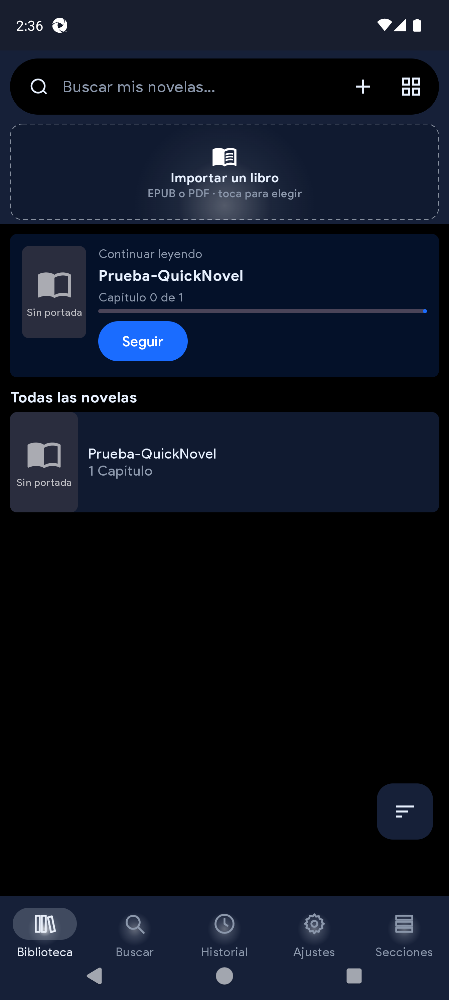
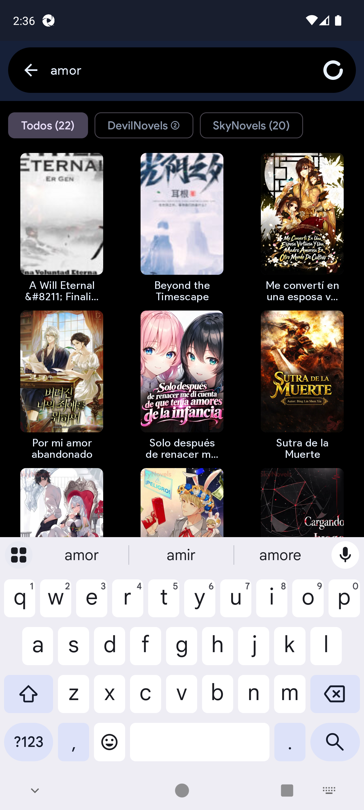
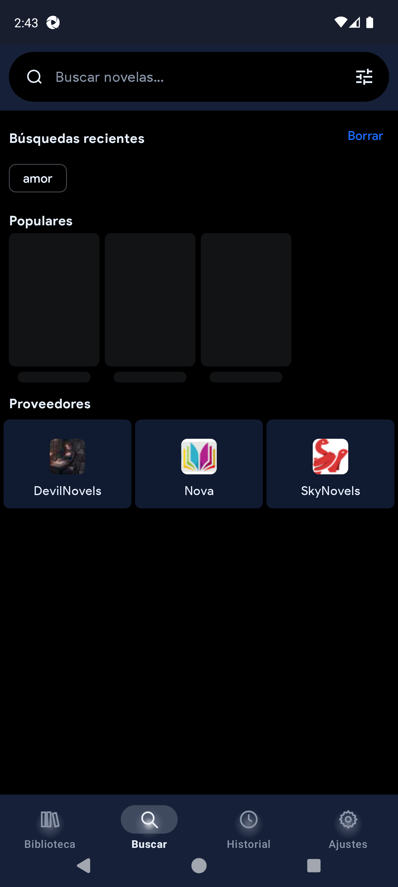
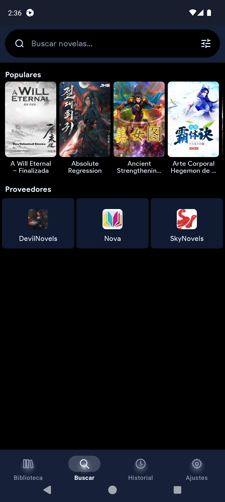
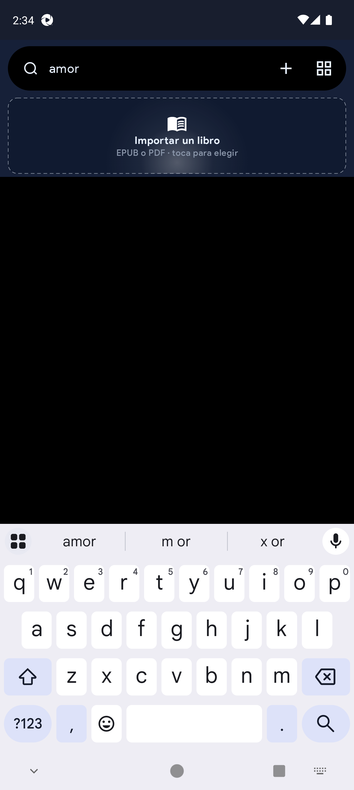

1. Introduction
QuickNovel Ultimate is an Android app to search, read, listen (TTS) and download web novels, and to import EPUB/PDF files.
It is a fork of QuickNovel with its own branding:
- Fire themes (Blue / Black / Lava).
- Distinct package: com.lagradost.quicknovel.ultimate (not stock com.lagradost.quicknovel).
- History split into Reading / Visited.
- Import-B drop zone in Library.
- Custom providers (Blogger blog or Madara-like site) with simple + advanced CSS modes.
- TTS prefers Piper/Sherpa neural voices.
- Search blocks special characters by default (optional toggle).
2. Install & first launch
- Android 6.0+.
- Network for online providers.
- Optional: Sherpa TTS / Piper for better ES/EN voices.
- Uninstall older Ultimate and stock QuickNovel if present.
- Install QuickNovel-Ultimate-1.1.4-universal.apk.
- Allow notifications if prompted.
- If an update dialog offers upstream 3.x → Skip update / Cancel.
3. Navigation map (bottom bar)
| Tab | Purpose | What you see first |
|---|---|---|
| Library | Local books (downloaded/imported) | Search, Import-B, list |
| Search | Online providers | Query field, provider tune, Popular |
| History | Opened / reading items | Reading / Visited pills |
| Settings | All configuration | General, theme, app, chapters, translation, tutorial, custom providers, reader, info |
| Sections | Library shelves | Custom sections |

4. Library module
Where: Library tab. Code: ui/download/DownloadScreen.kt.
- Search my novels… — filters local library (pinned while scrolling).
- Import-B — “Import a book / EPUB or PDF”.
- + — import one or many.
- List/grid toggle, Continue reading, Follow, progress “Chapter X of Y”.
- Sort FAB for ordering criteria.
5. Search module
Where: Search tab. Code: ui/search/SearchScreen.kt.
- Query field; provider tune icon → multi-select dialog.
- Recent searches, Popular carousel, result chips per provider.
- Special characters (@#$%…) blocked by default; enable in Settings.


6. History module
Where: History tab. Reading vs Visited pills; date groups (Today, Yesterday, This week, Earlier); clear options.
7. Sections module
Where: Sections tab (Ultimate-only). Organize library novels into shelves/sections with Fire theming.

8. Settings (all groups)
Code: ui/settings/SettingScreen.kt.
8.1 General
| Option | What it does |
|---|---|
| Locale | UI language (es, en, tr, ru…). |
| Provider languages | Which non-English source languages appear. |
| Show English providers | Off by default. |
| Allow special characters in search | Off by default. |
| Search providers list | Which built-in providers are active. |
8.2 Theme
- App theme (Ultimate Blue, etc.).
- Fire icon pack + launcher icon (Blue/Black/Lava).
- Bottom nav style, settings style, primary color, rating format.
8.3 App
- Check for update (current 1.1.4).
- APK installer preference.
- Show app updates (keep off on Ultimate to avoid stock APK).
- Backup / restore + backup folder.
8.4 New chapters
- Notify new chapters, frequency 3/6/12/24h, check now.
8.5 Translation (Gemini)
- Get API key, paste key, pick model, test key.
8.6 Tutorial
Three help dialogs: Custom providers, Downloads, TTS (see §12).
8.7 Custom providers
See §9.
8.8 Reader settings / Info
- External reader toggle; download path (e.g. Download/My Novels/).
- Logcat viewer (save / copy / clear).

9. Custom providers (add / manage / advanced)
Where: Settings → Custom providers.
Code: CustomProviderDialogs.kt, CustomProviders.kt.
9.1 Simple add
- Settings → Add provider.
- Pick type:
- Blog (Blogger / Blogspot) — e.g. myblog.blogspot.com. Novel lists appear one-by-one in Search.
- Website (Madara / other) — WordPress/Madara novel sites; auto templates.
- Enter Name, site address, language (2 letters, e.g. es).
- Tap VALIDATE, wait, then Add provider.

9.2 If auto-detect fails → Advanced
- Tap Advanced.
- Fill CSS selectors (or Madara preset).
- Test with a sample query.
- Save when search → novel → chapter all pass.
| Advanced field | Meaning |
|---|---|
| Name / site URL / lang | Identity |
| Search URL | Must include {query} |
| Result item / link / image | Search list CSS |
| Novel title / author / cover / synopsis | Novel page CSS |
| Chapter links / content | Chapter list + body |
| Newest first / Madara ajax | List behaviour flags |
| Test word / Madara fill | Validation helpers |
9.3 Manage
- Settings → Manage providers.
- Empty → message + add button.
- Pick one → Edit or Delete (downloads are kept).

9.4 After adding
The provider appears in Search multi-select and Settings provider lists; you can search it like built-ins.
10. Novel detail, download & export
- Cover, synopsis, chapter list.
- Stream / read online vs Download.
- Download dialog: all chapters or range; chapters-per-file batches; EPUB/PDF flows; preview where available.
- Then open from Library; Update fetches new chapters; Delete removes local files.
11. Reader & TTS
- Tap center to show/hide bars; chapters, TTS, reader settings.
- External reader setting may open EPUB/PDF in another app.
- Open a chapter → speaker icon.
- TTS bar: play/pause, stop, prev/next sentence.
- Reader settings → Voice: language, voice, rate, pitch, sleep timer, lock TTS area.
- Also controllable from the notification.
Recommended voices: Piper Dave (ES) / Lessac (EN) via Sherpa-ONNX.
12. Official in-app tutorials
Under Settings → Tutorial:
Custom providers
- Settings → Custom providers → Add provider.
- Blog or Website + name/URL → validate.
- Manage to edit/delete; Advanced for manual CSS.
Downloads
- Novel → Download → all or range.
- Optional chapters-per-file.
- Path in Settings → reader / download path → open from Library.
TTS
- Chapter → speaker → TTS bar / notification.
- Voice tab for language/rate/sleep.
- Install Sherpa/Piper for best quality.
13. Beginner flows
A) First search & read
- Search tab → pick providers → query → open cover → read online.
B) Offline download
- Detail → Download → wait → Library.
C) Import EPUB/PDF
- Library → Import a book → pick file → open.
D) Add your blog/site
- Settings → Add provider → Validate → Search with it enabled.
E) Follow updates
- Follow on library card → Settings → New chapters notify + frequency.
14. Screenshot gallery




15. How to write bugs for a Word handoff
Template: plantillas/Bug-Report-Template.docx.
- Confirm Ultimate APK 1.1.4.
- Device + Android version.
- Reproduce ≥ 2 times; attach screenshot.
- One bug = one problem; numbered steps; expected vs actual.
- Save as Bugs-QuickNovel-Ultimate-1.1.4-YYYY-MM-DD.docx.
| Field | Example |
|---|---|
| ID | BUG-012 |
| Title | Custom providers: VALIDATE never finishes for blogspot X |
| Severity | High |
| Module | Custom providers |
| Steps / Expected / Actual | Numbered, clear |
16. Automated tests
- Unit: ./gradlew :app:testDebugUnitTest
- E2E: e2e/ specs 01–09 (library, nav, search, history, settings, import, reader/TTS seed, providers, special chars)
- Allure: e2e/allure-report
17. Annex
- https://github.com/RaffyRod/NovelReader
- https://github.com/LagradOst/QuickNovel
- Package: com.lagradost.quicknovel.ultimate
- Spanish manual: docs/manual-1.1.4/es/